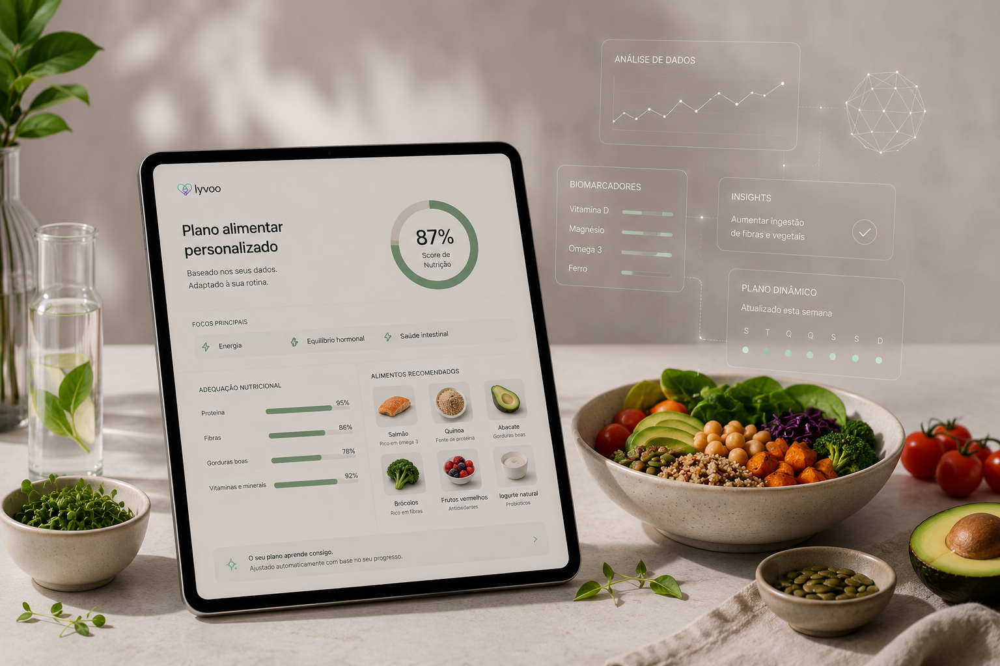

A continuous cycle of prevention.
From biomarker collection to your action plan.
Through to the 6-month reassessment that proves your progress.
Most people have blood tests once a year and wait months for a follow-up appointment.
No context. No plan. No continuity.
Wait 3 to 12+ months for an appointment
Portugal's healthcare system is under pressure. Problems worsen while you wait.
Results in 7-10 days
Kit delivered to your door. Collect at your convenience. Return by post. No queues, no travel.
Fragmented tests, no context
Isolated, basic parameters that don't reveal the full picture of your health.
+50 biomarkers in a single panel
Cardiovascular, hormonal, metabolic, nutritional
and more. An integrated, complete view.
"Within normal range" with no explanation
Being within normal range doesn't mean you're healthy. It means you're not in immediate danger.
Integrated medical interpretation
Every result in context. Thinking long-term.
You know exactly what it means and what to do.
Every appointment starts from scratch
No history, no continuity. Nobody tracks your progress over time.
Continuous reassessment. Measurable progress.
6-month follow-up assessment. Your plan adapts to what has actually changed.
Your sample is processed in a certified laboratory. Every biomarker was selected for its clinical relevance and direct impact on preventive health. Click a category to explore the panel.
Add specialist analyses to your programme.
Each module includes testing, clinical interpretation and specific recommendations.
Your biomarkers reveal early signs of dozens of conditions. Long before any symptoms appear.
7 clinical categories · Integrated medical interpretation · ISO 15189 certified lab
Four simple steps, from sign-up to continuous health optimisation.
One annual programme, everything included. The collection kit arrives at your address within 48 hours, with everything you need for at-home testing.
A simple finger-prick collects your sample in 5 minutes. Follow the app instructions and return in the pre-paid envelope included.
When your results are ready, you receive a report with real clinical interpretation of each biomarker. We also schedule a nutrition consultation to turn your results into concrete action.
After 6 months you repeat the panel and we compare results against your baseline to prove the progress.

Your nutritionist interprets your blood test results and builds a dietary plan tailored to you - with calculated macros, a food list and clinical notes specific to your metabolic profile.
Your doctor identifies the real deficiencies in your results and recommends only the supplements that make sense for your profile - with optimised dosage, form and timing.
Lyvoo centralises everything: results, nutritional plan, appointments, reminders and communication with your clinical team. Designed to be simple to use and impossible to ignore.
As soon as the laboratory processes your sample, results appear in the app with clear, contextualised interpretation.
Your dietary and supplementation plan tracks your biomarker evolution and is updated at each assessment.
Message your doctor or nutritionist directly through the app. No waiting until the next appointment.
A single number that summarises your preventive health status and should rise throughout the programme.
Published clinical studies demonstrate that continuous preventive monitoring and telemedicine produce measurable, consistent results.
The best results come from combining clinical monitoring with continuous follow-up. Telemedicine transforms episodic care into regular prevention, increasing adherence, risk factor control and quality of life.
GLP-1/GIP/glucagon agonists are a revolution, but rapid weight loss brings challenges many healthcare professionals are still not closely monitoring: muscle mass loss, nutritional deficiencies, renal and thyroid changes. Lyvoo was built for exactly this.
On GLPs or about to start?
Join Lyvoo and have a doctor and nutritionist tracking your progress with real data.
Illustrative data. Lyvoo does not prescribe and does not replace your treating physician.
We work in complementarity with your existing healthcare team.
People like you who decided to understand their health before it was too late.
Lyvoo was born from the conviction that preventive medicine should be accessible to everyone. And that technology and clinical expertise complement each other.
Clinical nutritionist with experience in preventive medicine and metabolic health. Passionate about science, he founded Lyvoo to democratise access to biomarker-based nutritional intervention.
Specialist in preventive medicine. Responsible for the clinical supervision of Lyvoo programmes and the medical interpretation of laboratory results.
Passionate about technology and innovation, she leads the Lyvoo user experience. She ensures complex tools become simple and accessible for the people who matter most: the user.
Comprehensive blood tests typically cost €800-1,500 at private clinics.
Free cancellation before kit dispatch · No automatic renewal
20 essential biomarkers included in the base panel. Optional modules available: Vitamins (D, B12, Folate), Male Hormonal, Female Hormonal, Fertility, Advanced Cardio, Hepatitis B, Extended Thyroid, Stress, Full STI Test and Food Intolerance Test.
Answers to the most common questions before you get started.
From there, we chart the path together: with real data, a clear plan, and results that can be measured.